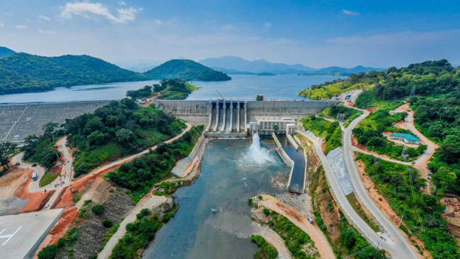
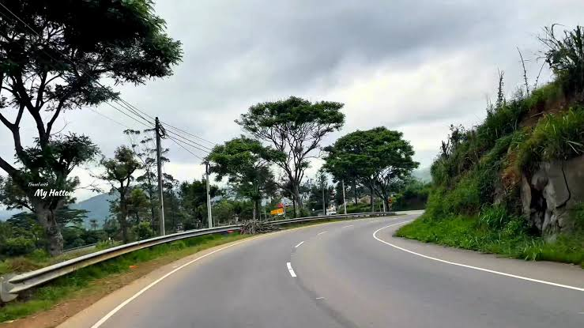
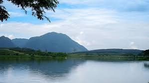

Welcome to Rural Development Bureau
Together for a Prosperous and Sustainable Rural Sri Lanka
25
Districts
15,000+
Projects
Rs. 25 Billion
Total Allocation
Rural Community
Our Priority
Sustainable
Development

About the Bureau
The Rural Development Bureau is committed to promote balanced and sustainable development in rural areas through effective project management, monitoring and support for rural communities across Sri Lanka.
Learn More →▤ Latest Projects
View All →
Mahakanadrawa Canal Improvement Project
Monaragala District

Atabage – Pussellawa Road Development
Kandy District

Handapanagala Water Supply Project
Badulla District